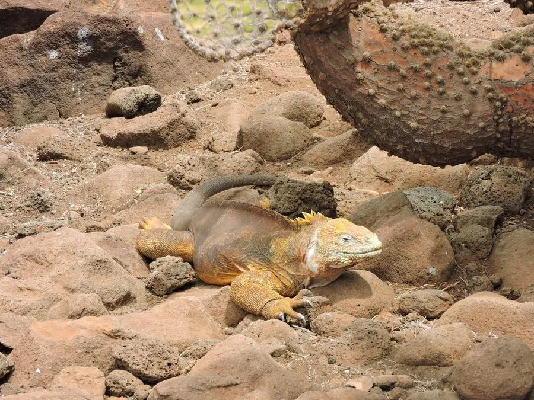

爬行动物 · 动物界
陆鬣蜥 Conolophus subcristatus

加拉帕戈斯群岛特有的陆生鬣蜥，以仙人掌为主食，与海鬣蜥同域演化，因外来物种入侵而受威胁，是群岛特有的物种。
- 分类
- 门脊索动物门纲爬行纲目有鳞目科鬣蜥科属陆鬣蜥属
- 栖息环境
- 加拉帕戈斯群岛的干旱灌丛、仙人掌林与岩石地带
- 地理分布
- 厄瓜多尔加拉帕戈斯群岛的多个岛屿
- 保护级别
- IUCN 易危（VU）；非中国原产，在中国无保护级别
物种志
陆鬣蜥体长 0.9–1.5 米，体重 5–11 千克，身体粗壮，头部短钝，背部有一列短棘刺，体色以黄褐、橙黄或暗红为主，不同岛屿的个体颜色差异明显；四肢粗壮，尾巴较粗，适合在岩石和沙地上活动。
它仅分布于厄瓜多尔的加拉帕戈斯群岛，栖息于干旱的灌丛、仙人掌林和岩石地带，以仙人掌的茎、花、果实为主食，也吃其他植物和腐肉，清晨常在岩石上晒太阳。每年繁殖季雌蜥在沙土中挖洞产卵 2–25 枚，孵化期约 3–4 个月。达尔文曾在旅行笔记中描述过它的形态和习性。由于外来山羊、野猫、老鼠的竞争与捕食，以及栖息地退化，陆鬣蜥种群受到威胁，被列为易危物种，各岛已开展外来种清除和圈养繁殖。
形态与习性
- 食性仙人掌的茎、花、果实及其他植物
- 体长0.9–1.5 m
- 体重约 5–11 kg
- 繁殖卵生，2–25 枚，孵化约 3–4 个月
- 活动节律昼行性，清晨在岩石上晒太阳
趣味知识
- 陆鬣蜥以仙人掌为主食，能剥开带刺的仙人掌取食内部组织。
- 它和海鬣蜥生活在同一片群岛，却分别适应了陆地和海洋两种生活。
- 达尔文曾在加拉帕戈斯观察并记录过陆鬣蜥的习性。